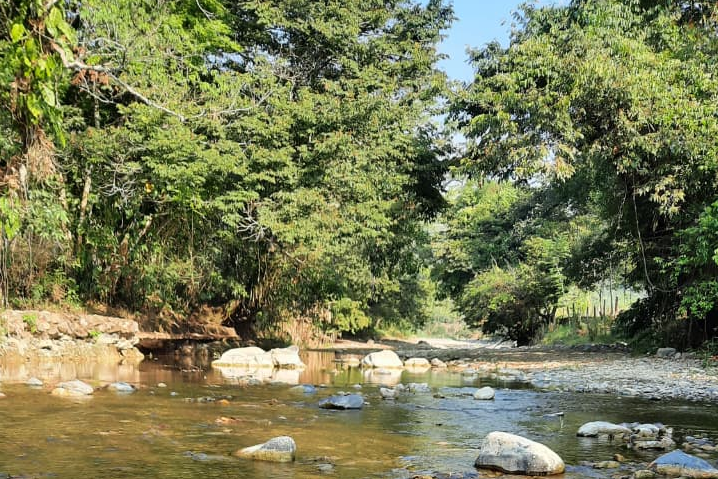
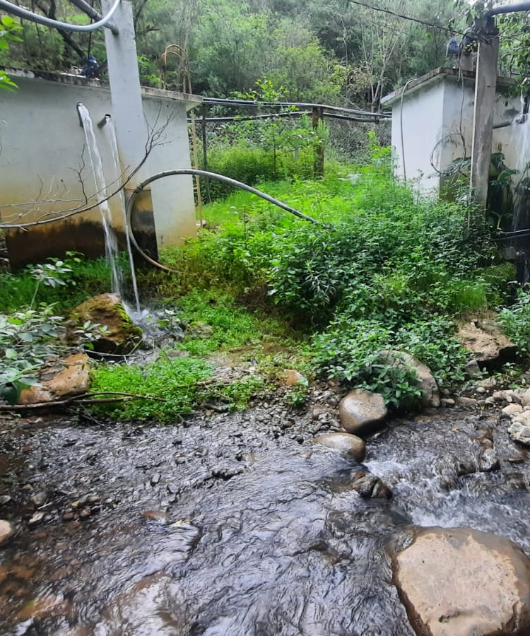
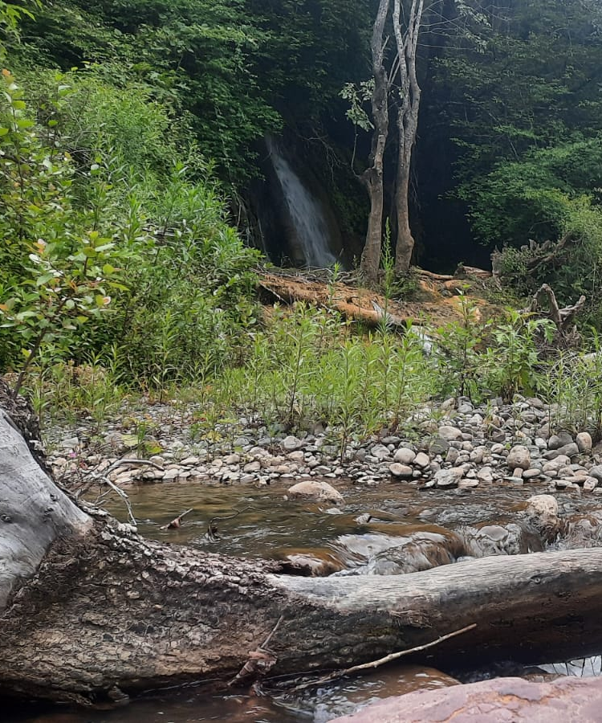

| PRINCIPALHISTORIA CURIOSIDADESUBICACIONCONTACTOTRADUCCION AL MIXTECO |
 |
RIO "YUTE KUIÑI"
En la comunidad existe un rio, este pasa por la mitad del pueblo, en temporadas de lluvia crece a tal grado de aveces tapar terrenos que estan cerca de la orilla, en ocasiones el rio se encuentra limpio a tal grado que puedes observar los pececitos que aun existen en la localidad.
|
COMPARTE AGUA
La comunidad de San Juan del Rio cuenta con una toma de agua, la cual abastece a tres comunidades, las cuales son: Santa Maria Cuquila, una parte de la comidad de Magueyal y San Juan. |
 |
 |
LA CASCADA
Uno de los paisajes de la comunidad es la cascada, la cual se enuentra entre los limites de San Juan y San Juan del Rio, esta cascada puede ser un lindo lugar para visitar si estas en la comunidad. |
|